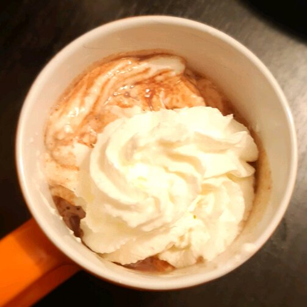

Chocolate Bar Hot Chocolate

Description
I wanted to use up some full-size chocolate bars leftover from Halloween and decided to make hot chocolate out of one. The result was fabulous!
- 1 (1.55 ounce) bar milk chocolate candy bar, chopped
- ⅔ cup milk, or more to taste
- 1 pinch ground cinnamon (Optional)
-
Place chocolate pieces in a saucepan over medium-low heat; add milk and whisk constantly until chocolate is melted and well blended, about 5 minutes. Whisk in cinnamon. Remove from heat; add more milk if desired. Serve in a mug.
- Enjoy!